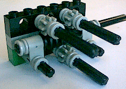
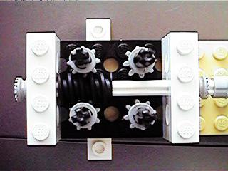
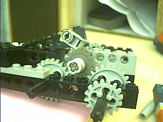

Robbert
Mattijs
van Mattijs, Stef en Robbert Mientki
januari 2001
| Lego-Knex
Robbert Mattijs |
Lego Aandrijvingen
van Mattijs, Stef en Robbert Mientki januari 2001 |
|  |
1 motor - 3 assen Ontwerp Stef Mientki Uitbreiding van het ontwerp van Dave Baum De as midden-onder draait altijd mee, zowel vooruit als achteruit |
|  | Ontwerp van Michael
Powell.
Je kunt hier dezelfde truuk uithalen als het ontwerp hierboven. |
|  | Ontwerp van Robbert Mientki. |